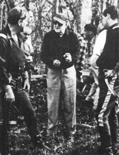
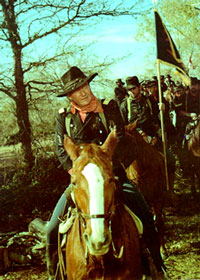
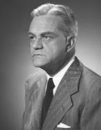

|
The Horse Soldiers, released in 1959, is based on a
real event from the Civil War. Grierson's Raid, which
occurred in April 1863, involved 1,700 men operating under
the direct orders of Ulysses S. Grant. Led by Colonel
Benjamin H. Grierson, the force was instructed to penetrate
deep into Mississippi in hopes of interrupting the city of
Vicksburg's lines of supply and communication. a little over
two weeks, Grierson's soldiers traveled over six hundred
miles, living off the land, and confusing the Confederate
authorities who sent upwards of 20,000 troops out to capture
him. The result was the destruction of over 60 miles of
railroad and telegraph, along with numerous stores of
Confederate guns and ammunition. Grierson's losses totaled
26 men killed, wounded or missing. It was most spectacular
raids of the war.
The director of The Horse Soldiers was Hollywood
legend John Ford. Except for two previous films regarding
Abraham Lincoln, Ford had never directed a Civil War
|

John Ford (center) with John
Wayne (left) on the set of The Horse
Soldiers.
|
picture. But the war had always intrigued him, and he was an
authority on the subject. His home library contained
extensive volumes on the war, and his favorite reading was
the historical work Lee's Lieutenants. Both he and
his wife had ancestors who fought on both sides during the
war. He never declared an allegiance to either side; he
respected the Union for its principle of preserving the
nation, and he loved the South for its romantic gallantry.
The Horse Soldiers was an expensive independent
production put together by two writer-producers, John Lee
Mahin and Martin Rackin. They had bought the film rights to
the novel The Horse Soldiers, written by Harold
Sinclair, who had based his book on the Grierson raid. Mahin
and Rackin, to get financial backing for the film, had to
put together a package deal. In essence, they had to
guarantee a top name star and director so their financiers
would be assured that the film would return profits.
Rackin approached Ford first, figuring that almost any
star in Hollywood would want to work with him. He offered
Ford $200,000 and 10 percent of the net profits. Ford
agreed, then he asked his old friend John Wayne to play the
lead, who agreed and was soon joined by William Holden as
the second lead. Both Wayne and Holden received a salary of
$750,000 and 20 percent of the profits. At the time, this
was the highest salary ever paid in Hollywood for a
performance in a single motion picture. This was possible
because of the loss of the studio contract systems; now
big-name stars could command their own salaries.
Ford, Rackin, and Mahin began to work on the script. One
of the dramatic embellishments they added was a love
interest, a Southern belle named Hannah Hunter who discovers
the intentions of the raid and is taken along for security
reasons. Also added was a scene where boys from a military
academy march out to combat the raiders. Although this
didn't happen on Grierson's raid, it was based on an
incident in 1864 when cadets from the Virginia Military
Institute marched seventy miles through the Shenandoah
Valley to take part in the battle of New Market.
Despite the embellishments, Ford became uneasy with the
project and didn't apply himself to it. At the time, he was
nearing seventy and had always had a reputation for being
irascible. He was despondent, at times wondering why he had
taken on the project. At one point, while working on the
script, he reportedly asked Mahin, "You know where we should
make this picture?" "No," replied Mahin. "Lourdes. It win
take a miracle to pull it off."
But he went ahead with the picture. It begins with
Colonel John Marlowe (Wayne) being given the assignment of
destroying Vicksburg's main source of supply, the town of
Newton Station. Marlowe is not a career Army officer, but a
railroad engineer whose life has been devoted to building,
not destroying, things. He bitterly describes the war as
insanity, but he has been given a job to do and intends to
do it. Against his wishes, a medical unit is assigned to
Marlowe's brigade, under the command of Maj. Hank Kendall.
Marlowe dislikes Kendall from the start not as a person, but
as a doctor. He distrusts doctors immensely and feels that
the war only gives the medical profession a wider field of
opportunity for experimentation. Marlowe's distrust is
personal: his young wife died at the hands of incompetent
medical aid.
Progressing on their mission for two days, Marlowe and
his men stop at the Greenbriar Plantation, home of Hannah
Hunter. Hannah, disarmed by the thought of Yankees in her
home, attempts to deceive the soldiers into thinking that
she is just a talkative little flirt. Kendall, however, sees
through her act and discovers Hannah eavesdropping on an
officer's conference. In order that the raid will not be
discovered, Marlowe is forced to take Hannah along.
Marlowe, actually quite an emotional man, has tried to
avoid a fight, hoping to complete his job without any
senseless killing. However, soon after arriving in Newton
Station, a small force of Confederates, mostly sick and
invalid veterans, launch an attack against Marlowe's men.
The casualties are severe for both sides, but more so for
the small group of Rebels. As the wounded are carried into
the hotel, Kendall begins a long operating session to care
for them. While that is going on, the remainder of the Union
troops begin to destroy the war supplies of Newton Station.
The rampant destructions, which his soldiers seemingly
enjoy, further galls Marlowe. Upon the explosion of a
Confederate locomotive, he harshly exclaims, "That's how I
make my living-building railroads!" Hannah, having seen only
the cold, heartless exterior of Marlowe, now sees that he
does have emotions and begins to be drawn to him.
With the job complete, Marlowe makes the decision to head
straight south to Baton Rouge, instead of returning North to
their starting point in Tennessee. Despite objections from
his other officers, they ride South, continuing to destroy
|

John Wayne, as Colonel Marlowe,
leads his men south inThe Horse Soldiers.
|
anything valuable to the Confederacy. But the Confederates
begin to fight back. Cavalry patrols are patched to follow
and capture Marlowe's men. In a desperate attempt to delay
the Yankees from escaping, a group of cadets from the
Jefferson Military Academy, ranging in age from seven to
fourteen, march out to engage them. It develops into one of
the most heartfelt scenes in the picture as the boys, with
flags waving and drums rolling, advance proudly through
their hometown, uncertain of the fate that awaits them. One
mother actually pulls her son out of line, afraid that he
will be sacrificed needlessly. Once on the battlefield,
under the cover of a nearby artillery battery, the cadets
march line abreast and fire upon the surprised Federals.
Marlowe, realizing the absurdity of the situation, decides
not to fight, and he orders his men to retreat.
After snaking their way through a swamp to escape
pursuing Confederate patrols, the Yankees reach the River
Amite, less than forty miles from their destination. The
bridge leading to Baton Rouge, though, is controlled by the
Confederates and Rebel cavalry is closing rapidly behind
them. Marlowe is wounded by shots from across the bridge and
must submit to Kendall's medical expertise. Kendall and
Marlowe have continually argued and disagreed during the
raid, but Kendall has proven himself a compassionate man and
an exceptional doctor. Kendall delights in the chance to
treat Marlowe's wound, who, while being treated, dismisses
his chances of survival.
The wound proves minor, and Marlowe is able to lead his
men in a desperate charge across the bridge to knock out the
Confederate forces blocking their route. However, the
wounded of the battle must be cared for, and Kendall, his
Hippocratic oath compelling him to do his duty, chooses to
remain behind with them and faces certain imprisonment.
Hannah, too, is to be left behind where "her own kind can
take care of her." Marlowe, though, has fallen in love with
Hannah and vows that he will return to her after the war.
His men start south, and he follows, blowing the bridge
behind him to stop the pursuing Confederate Cavalry. The
raid successful, they ride safely into Baton Rouge.
It is a tribute to Ford's subconscious filmmaking
techniques that The Horse Soldiers properly captures
the mood and feelings of the Civil War period. Its rich-hued
colors and striking locations give the film a reality
lacking in many other productions. Ford does not attempt to
argue the reasons behind the war, he only shows two factions
fighting for what they believe. The Union soldiers are only
doing a job, which unfortunately makes them an invader into
another part of the United States. The Southerners are shown
as a gentle, gallant people who will fight for their rights
and decency. This is aptly shown when the Union troops ride
into Newton Station, and the women of the town throw dirt
and hurl names at the intruders in a vain attempt to stop
them.
What helps to make the film enjoyable is the rich
characterizations Ford brings to the screen. Beyond the
leads, each supporting player competently helps to flesh out
the story. The most entertaining, and at times the most
galling, character is probably Marlowe's second in command,
Colonel Phil Secord. Secord is an ambitious politician, weak
and indecisive. He begins the film desiring a seat in
Congress, and as the successes of the raid continue to loom
larger and larger, so do his ambitions. During the final
battle for the bridge he is ready to make political
appointments and run for the presidency. And this just
moments after proclaiming that the Confederates had them all
in a trap, and that "there's nothing disgraceful about an
honorable surrender!"
Filming was done on actual locations throughout Southern
Louisiana and Mississippi during the fall of 1958. At one
point during the filming, Ford experienced some of the
racial segregation that existed in the South at that time.
The scene required Marlowe's brigade to ride past a church,
with the Negro congregation watching from outside. Ford
found a quaint and rustic church in Louisiana and hired the
entire congregation as extras. The supervisor of the local
labor board arrived and informed Ford that he couldn't pay
them more than two dollars a day. "I think we can do better
than that," Ford said. "No sir"' said the supervisor. "Two
dollars a day. It's the law."
Ford thought it ridiculous and received permission from
the minister to address the congregation. He told them that
they would all be paid Hollywood scale, and that lunch would
be served at twelve noon. "It isn't the best food in the
world, but it's the best we can do," he said. "We would
consider it a great honor if you would join us." Then Ford
went on to say, "I don't want you people to feel that
because you're portraying slaves we are putting you down in
any way ... You are a part of history, and you should be
proud of it. We are glad to have you as part of our
picture." Stories abound in Hollywood about how tough John
Ford was, but this story provides a bit of a counterbalance.
Ford, who was known for his lusty, flag-waving cavalry
pictures of the forties, had planned a triumphant ending for
The Horse Soldiers as Marlowe's men arrive in Baton
Rouge. But the director was still apprehensive about the
picture and had only generated a small amount of enthusiasm
for it during filming. The final straw, though, came just
before Christmas while on location. One member of the film
company, by the name of Fred Kennedy, was a very close
friend of Ford's. Kennedy had worked on almost every Ford
Western as an extra and stuntman. He requested to do a
simple horse fall for The Horse Soldiers for some
extra money. Ford told him no, realizing that his friend was
getting older and was physically not prepared to do such a
stunt. But Kennedy insisted, and finally Ford consented. The
scene was set up, the cameras rolled, and Kennedy rode his
horse into frame. At the precise moment he fell off the
horse, and hit the ground, exactly as he should. But he
didn't get up. Kennedy had landed the wrong way and broken
his neck. He was dead.
Ford was devastated. He blamed himself for Kennedy's
death and rushed the picture through to completion. Ford
|

Composer David Buttolph
|
scrapped the plans of filming the exultant finale and
decided to end the film as he did.
One aspect of The Horse Soldiers that stands out
is its beautiful and haunting musical score. Composer David
Buttolph included many actual Civil War tunes, which
complement the action and emotions on the screen. The
sensitive musical arrangements are played at times with the
simple strumming of a banjo or the lilting sound of a mouth
organ. For a love theme, Buttolph created an arrangement of
the beautiful and romantic Civil War song, "Lorena."
The Horse Soldiers stands today as one of John
Ford's best-remembered films. It may not have been his best
work, as many critics have suggested, but it is a picture
that reflects his talent for telling a story.
Source: John M. Cassidy, Civil War Cinema: A Pictorial History of Hollywood and the War Between the States
(Missoula, MT: Pictorial Histories Publishing Company, 1986), 114-124.
|